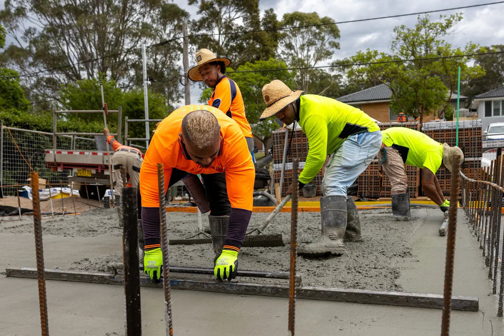
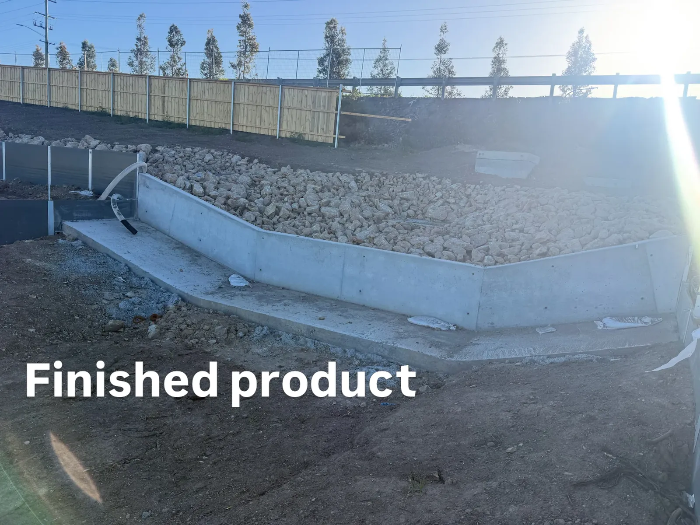

Concreting & earthmoving
Newcastle, Hunter
Driveways, pathways, slabs and footings. One crew from the first cut to the final finish.
Price my slabNEWYCRETE
Wet concrete, poured and screeded on a Newcastle job.
The short version
Concrete is a permanent decision. We set it out like one.
Newy Crete is a Newcastle concreting and earthmoving crew working with homeowners, builders and property managers across the Hunter. We cut, form, steel, pour and finish with the same crew, so the person who quotes the job is the person standing on the slab.
No phone tag. No handover to a mystery subcontractor. A fixed written price, a clean site and a surface that still looks right after a decade of cars, dogs and weather.
WORK
Recent pours
Driveways, slabs, formwork and finishes. Photographed on the job, not styled in a studio.




Scope
What we pour.
Residential and builder work. If it is concrete on your site, it is probably in here.
Driveways & entrances
New pours, replacements and extensions. Broom, exposed or plain, with falls that shed water instead of pooling at the garage door.
Pathways & surrounds
House to garden, pool to street. Practical set-out, clean edges and a finish that handles bare feet and wheelbarrows.
Slabs & shed floors
Shed slabs, alfresco pads, extension floors and hardstand. Level, square and poured for whatever goes above.
Footings, piers & retaining
Excavation, steel and concrete for footings and piers. Off-form retaining walls and steps ready for the next trade.
Exposed & decorative
Aggregate, broomed, honed and plain. We match the finish to the house, the use and the maintenance you actually want.
Site cuts & earthworks
Strip, cut, level and spoil removal before the pour. The ground is right before the concrete goes down.
Budget
Set your slab.
Put in the size and finish. Get a real budget range before you call. It is not a quote, it is a way to know whether you are in the right paddock.
Indicative range only. Ex GST. Final price after an on-site measure, with access, cut, spoil and reinforcement allowed for.
Process
In the ground, in order.
A recent job, documented from the first cut. Open a stage.
Cut & set out
The footprint is cut and leveled, string lines run and the base compacted. Levels and fall are set before a single board goes down.
- Levels and fall set
- String lines run
- Base compacted
Steel & form
Reinforcement tied, chairs set, formwork boxed and braced. Everything checked square and to height before the pour.
- Reo tied and chaired
- Formwork braced
- Square and height checked
Pour & screed
Concrete placed, spread and screeded to the set-out. The surface is worked while it is still alive, not after it has gone off.
- Continuous placement
- Screed to set-out
- Surface worked wet
Finish & clean
Forms stripped, edges cleaned, surface finished and the site left tidy. Ready for the next trade or the first car.
- Forms stripped
- Edges cleaned
- Site left tidy
The record
Straight facts.
| Legal entity | Newy Concrete Solutions Pty Ltd |
|---|---|
| Trading as | Newy Crete |
| Base | Newcastle, New South Wales |
| Work | Residential & builder concreting, earthworks |
| Areas | Newcastle, Lake Macquarie, Maitland, Cessnock, Port Stephens, Singleton, Muswellbrook, Hunter |
| Quote | On-site measure, fixed written price |
| Finishes | Broom, exposed aggregate, honed, plain |
| Contact | 0436 486 214 |
Questions
Before the pour.
What areas do you work in?
Newcastle, Lake Macquarie, Maitland, Cessnock, Port Stephens, Singleton, Muswellbrook and the wider Hunter Region.
What size projects do you take on?
From single pathways and shed slabs through to full driveways, footing packages and multi-part builder works.
How does the quote work?
Call or send the enquiry form. We arrange an on-site measure, talk through the finish and site conditions, then provide a fixed written price before work starts.
Do you work with builders?
Yes. Send the drawings or a summary of the slab, footing or earthworks package and we will price the scope and program.
Can you match an existing concrete finish?
Often, yes. Bring a photo or show us the existing surface and we will recommend the closest practical finish, colour and aggregate.
Is exposed aggregate available?
Yes. Exposed aggregate, broomed, honed and plain finishes are all available depending on the look and slip resistance you need.
Contact
Tell us what you're pouring.
0436 486 214Call the crew, or send the details. We will come out, measure it and put a fixed written price in front of you.
- Typical reply
- Same or next working day
- Quote
- On-site measure, fixed written price
- Coverage
- Newcastle to Singleton, coast to Cessnock